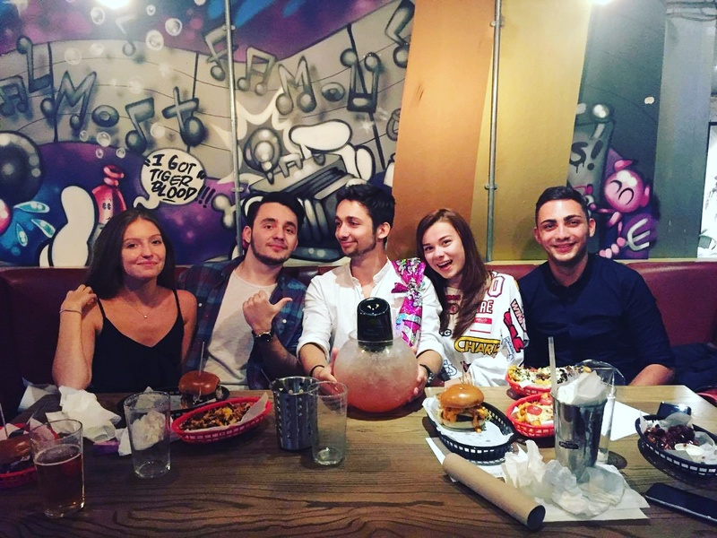
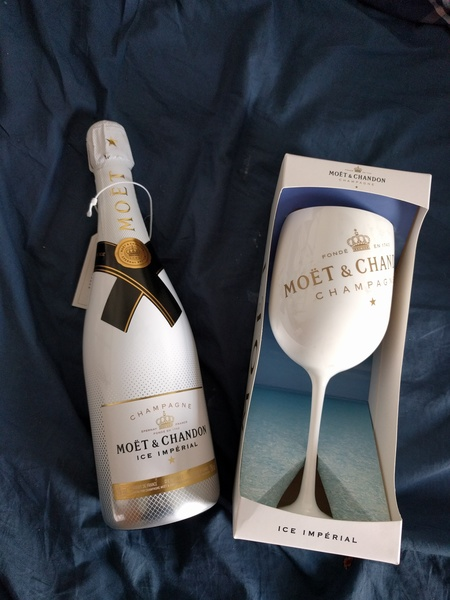

W
ell, here I was, one week until my b day and I had no actual plans for any kind of wild super sweet 21st b day party. (Yeah sad I know, I know) Don't get me wrong I did not suddenly become an extremely serious person who is all about adulting and how to make the most of his career, not yet anyway. That's why I planned a sick party for back home, but as the plane tickets for my exact b day ( FYI 3 rd of September, just in case anyone wants to make some late gifts) were super expensive I had to post pone it for another 2 weeks. Regardless of my great plan, I still did not want to spend my b day alone in my room fooling around with my imaginary friends. (both are Russian, so I named them Igor and Igor). And so the weekend was approaching and I had not even the slightest idea of what to do. Then it hit me, I am gonna become Rex the T-Rex for one day in LondonThis is me ragging at the bus driver who kicked me out of his fancy 2 floored vehicle. While I was all about RWOOOOAAR u fu*king twat rwoooar, he was all like, Sir, please understand that it is not safe for you inside this vehicle. Nonsense, I was perfectly safe in my giant inflatable costume. Sadly this is just a made up story as I was afraid that if I actually buy the costume there will be nobody there to record me doing all this normal stuff. Still, bear with me, my b day wasn't that bad after all...I actually enjoyed it lots. After a couple sleepless nights of continuous thinking about what i should do for THE weekend, i decided that I shall go to Manchester as a couple of my friends happened to be there during that time of the month. Now that a decision was made, the following step was to buy a train ticket (for those of you who are not living in the UK, train tickets are super duper expensive). After some thorough research, the cheapest ticket that I found meant me arriving in Manchester at 2 am. Well, i didn't mind it too much cuz I thought (emphasizing on I Thought) I am going to sleep nice and tight on the train... (I've never been so wrong before.... looks like babies don't really enjoy late night rides..if you know what I mean)
Anyway here i was 3 hours later (the trip is usually 2 hours but i assumed it is hard for the train to see at night so that's why the journey was longer???) in Manchester ultra tired. Saturday went by pretty quick by, as I only move from the bed to shower i believe. But then, the big night came up, the night in which i planned in so much detail how to celebrate my 21st b day. (With so much detail that 2 hours before i was supposed to meet my friends i was still thinking about where we should go. Finally, i decided that we shall go to this restaurant called Almost Famous. The only place ever in which i ate sooo much that i felt like i was ready to die. Well, so here we were, a bunch of us at our fancy table in this restaurant chatting, drinking and eating one of the tastiest burgers in Manch.  A couple pints (and a giant fishbowl filled with vodka and prosecco) later we found ourselves singing the hit Grease- You're the one that I wan in a karaoke bar t...unfortunately we kind of new only the "Uhhh uhh uhhh yeah" part. Regardless, the audience loved us and we had a brilliant moment with all our fans for almost 2 entire minutes. (for some weird reason... somewhere around the middle of the song, the dj decided to stop it??). And so my b day went by.
Bare with me few people who are reading this because you are kindly asked by me, the fun is not over yet. Sunday morning went down quite in style as well partly because of the family secrets passed down from generation to generation and partly cuz I got pancakes for breakfast. Well, as my dad says "A special day, needs to start in a special way" (just made this up on the spot but sounds amazing sooo) so i decided to follow his wise words and start my day by sipping away my ice Imperial champagne from my fancy glass filled with ice made in a plastic bottle (again...poor students) on some deep house vibes.  Then sadly i had to cook my own omelet (sadly cuz i was kind of dizzy so i was afraid for my safety around the stove) but..later own my efforts were rewarded with one of the greatest b day panCAKEs ever (haha see what i did there :>). Pancakes with strawberries and some wild exotic syrup (most probably maple but still). Pretty dope morning huh? Couple hours later...it was a pretty long morning, i was already in my train heading back to the gloomy London.
 Well, this was Manch...
And so the days went by and so the next weekend was closing in, which i was pretty sure it will be not even close to as cool as the last one...(well i was wrong again...strange week i know...i am never wrong). It was already sunday, and as i did mainly nothing exciting before that i wasn't really expecting some miracle to happen. Until... well, until my dad messaged me that he's in London :O and the wants to meet up...cool surprise huh?
And so we met and had a nice dinner together while downing pint after pint and chatting away how life is going on the cheeky vibes of a fancy american restaurant called "The Jonson family project" (great place in London to have a nice dinner, kind of expensive tho)
P.S: Many thanks to the waitress who removed 50 quid from our bill by mistake
Well, this was Manch...
And so the days went by and so the next weekend was closing in, which i was pretty sure it will be not even close to as cool as the last one...(well i was wrong again...strange week i know...i am never wrong). It was already sunday, and as i did mainly nothing exciting before that i wasn't really expecting some miracle to happen. Until... well, until my dad messaged me that he's in London :O and the wants to meet up...cool surprise huh?
And so we met and had a nice dinner together while downing pint after pint and chatting away how life is going on the cheeky vibes of a fancy american restaurant called "The Jonson family project" (great place in London to have a nice dinner, kind of expensive tho)
P.S: Many thanks to the waitress who removed 50 quid from our bill by mistake
Hope u, who ever u r that is reading this, enjoyed my lil story, and maybe u r even looking forward to my next adventure (wanna be) trip.
The one and only... Asul
Mateiasul